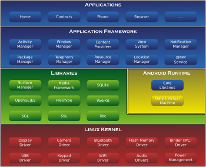

1. 소개1)

안드로이드(Android)는 구글의 개발형 모바일 플랫폼이다. 구글은 OHA(Open Handset Alliance)를 통해 휴대폰 플랫폼의 폐쇄성을 타파하기위해 안드로이드
플랫폼을 만들었는데,이런 개발형 모바일 플랫폼을 통해 비교적 제약이 적은 환경에서 다양한 어플리케이션울 개발하거나 운영할 수 있게 하였다. 안드로이드
는 모바일 단말기를 위한 소프트웨어 스택이며 모바일 환경에 최적화된 리눅스 기반의 운영체계와 사용자 인터페이스, 그리고 그 응용 프로그램들의 묶음이다.
기본 어플리케이션은 모두 자바 언어로 만들어졌다.
2. 개요2)
2.1. 역사
안드로이드(Android)는 원래 휴대전화용 소프트웨어 플랫폼을 개발하는 회사 Android에서 개발되 었으나 2005년 구글이 안드로이드를 사들였다. 그 후 2007
년 11월 구글을 중심으로 휴대전화 공통 소프트웨어 안드로이드의 개발을 추진하는 단체 Open Handset Alliance(OHA)가 발족하게 되면서 현재의 안드로이드
는 구글이 아닌 OHA를 통해 제공되고 있다. 누구나 무료로 이용할 수 있는 오픈소스로 배포되고 있고 2008년 10월 이후 부터는 안드로이드가 탑재된 많은 휴
대전화가 판매되고 있다.
2.2. 구조
안드로이드 시스템은 소프트웨어 스택(stack)의 형태로 구성된다. 마치 블록을 쌓아 놓은 것처럼 애플리케이션, 운영체제, 런타임 환경, 미들웨어, 각종 서비스
와 라이브러리 등이 겹겹이 모여 구성된 것이다. 스택의 각 계층과 그것들의 요소들은 긴밀하게 통합 및 조율되어 있다.3)
각 구조에 대한 설명은 다음과 같다.4)
-
애플리케이션 : 안드로이드 소프트웨어 스택의 맨 위에 위치하고 있다. 특별한 안드로이드 애플리케이션으로 제공되는 기본 애플리케이션과 장치 구입 후
사용자가 설치한 애플리케이션으로 구성되는 것이 애플리케이션 계층이다.
-
애플리케이션 프레임워크: 안드로이드 애플리케이션이 실행되고 관리되는 환경을 형성하는 서비스들이 모인 것이 애플리케이션 프레임워크이다. 안드
로이드 애플리케이션들이 재사용과 상호 운용 및 교체 가능한 컴포넌트로 구성된다는 개념을 이 프레임워크가 구현한다. 액티비티 매니저, 콘텐츠 제공자,
리소스 매니저, 통지 매니저, 뷰 시스템, 패키지 매니저, 텔레포니 매니저, 위치 매니저라는 핵심 서비스를 제공한다.
-
라이브러리 : 문자열 처리, 네트워킹, 파일 처리와 같은 일반적인 작업을 지원하기 위해 제공되는 표준 자바 라이브러리에 추가하여 안드로이드 개발 환경
에는 안드로이드 라이브러리도 포함된다. 이것은 안드로이드 애플리케이션 개발에 특화된 다양한 자바 기반 라이브러리이다. 이 부류의 라이브러리 예로
는 애플리케이션 프레임워크 라이브러리를 포함하여 사용자 인터페이스 생성, 그래픽 드로잉, 데이터베이스 액세스 등을 가능하게 해주는 라이브러리가 있다.
-
안드로이드 런타임 : 안드로이드 스튜디오에서 안드로이드 애플리케이션이 빌드될 때에는 바이트 코드 형태(DEX,Dalvik Executable)로 컴파일 된다. 그리
고 장치에 애플리케이션이 설치될 때 안드로이드 런타임(ART-Android RunTime)이 AOT(Ahead-0g-Time) 컴파일을 수행하여 바이트 코드를 장치의 프로
세서(CPU)가 필요로 하는 네이티브 명령어로 모두 변환한다. 이렇게 변환된 형태를 ELF(Executable and Linkable Format)이라 한다. 따라서 애플리케이션
이 실행될 때 ELF버전으로 실행되므로 애플리케이션의 실행 속도가 더 빠르고 배터리 수명도 항샹된다. 안드로이드 롤리팝 이전의 버전에서는 달빅 가상
머신에서 바이트 코드를 하나씩 네이티브 명령어로 변환하면서 실행하였다.
-
리눅스 커널 : 스택의 맨 아래에 위치한다. 리눅스 커널은 장치 하드웨어의 기반 운영체제 역할을 담당한다. 즉 멀티태스킹을 지원하고 메모리 관리와 프로
세스 실행 및 관리 등을 처리하는 핵심 시스템 서비스를 비롯해서 네트워크 인터페이스와 각종 하드웨어 인터페이스를 위한 장치 드라이버(ex. 디스플레
이, 와이파이, 오디오)를 제공한다.
3. Applications
3.1. Adblock Plus5)
1) Adblock Plus란?
Adblock Plus는 성가시고 따라다니는 광고들과 시스템 파괴 소프트웨어를 퍼트리는 주소를 차단하는 무료 확장프로그램이다. Android, Chrome, Firefox,
Internet Explorer, Maxthon, Opera, Safari and Yandex에서 사용가능한 Adblock Plus는 당신이 원하지 않는 모든 요소를 차단하는 필터를 사용한다.
2006년 Wladmir Palant에 의해 만들어진 Adblock Plus는 GPLv3 라이선스를 사용하는 오픈소스 프로젝트이다.
2011년 Palant와 Till Faida는 그들의 창작물을 이어가기 위해 Eyeo를 설립했다.
2) 기능
Adblock Plus는 유투브 광고, 페이스북 광고, 배너, 팝업 등 사용자들이 느끼기에 불쾌한 모든 광고들을 차단한다. 간단하게 Adblock을 설치하여 사용자가
보고 싶지 않은 광고들을 직접 골라서 리스트를 만든 후, 이 리스트들을 바탕으로 광고들을 차단하게 된다.
많은 웹사이트들이 광고 수익을 통해 운영되고 있기 때문에, Adblock Plus는 사용자가 짜증낼만한 광고보다는 방해받지 않을 정도의 광고만 없애도록
기본 설정이 되어있다.
이를 위해서 엄격한 가이드라인을 두고 실행하고 있으며, 사용자의 편의에 맞게 광고의 위치와 크기를 조정해주는 역할을 하고 있다.
어떤 사이트를 볼 때마다 사용자의 움직임에 반응하여 화면에 계속 보이게 따라오는 광고들을 볼 수 있을 것이다. 이러한 수백 개의 광고들을 Adblock
Plus에서는 쉽게 없애줄 수 있으며, 사용자가 어떠한 활동을 하는지 광고사 입장에서 모르게끔도 할 수 있다.
만약 사용자의 컴퓨터 부팅이 느리거나 팝업 광고에 의해 방해를 받는다면, 악성코드에 감염된 것으로 판단될 수 있다. 이러한 감염된 컴퓨터는 사용자의
정보를 훔치는 것을 포함해서 모든 사이버 공격에 노출되어 있다. 감염된 컴퓨터는 또한 해커에 의해 스팸 메일을 보내거나 이 컴퓨터를 통해 다른 컴퓨터
나 서버를 공격할 수 있다. 기본적으로, Adblock Plus는 몇 개의 악성코드 보호기능이 있다. 추가적으로, 이 기능에 악성코드 위험 사이트로 알려진 곳은
들어가지 않게끔 설정할 수도 있다. 이 기능들은 사용자의 컴퓨터가 바이러스, 트로이 목마, 웜, 애드웨어와 스파이웨어로부터 보호받을 수 있는 예방기능
을 해줄 것이다.
페이스북, 트위터, 구글 플러스 등에서 운영하는 광고사들이 모든 웹사이트에 광고성 정보를 보여주기 위한 버튼들을 만들어 놓은 것이 보일 것이다. 사용
자가 클릭하지 않더라도 이 버튼들은 SNS 서버에 광고를 띄우라는 요청을 보내어 원치 않는 광고를 보는 경우가 있을 것이다. Adblock Plus는 웹사이트들
에 있는 광고성 SNS 버튼들을 차단해주며, 당신의 웹서핑 습관을 기록하여 그것을 이용하는 것도 방지해줄 것이다.
출처
1)↑ "핵심만 골라 배우는 안드로이드 스튜디오", 닐 스미스, 제이펍, 2009, p2-p109. 2016년 12월 10일에 확인함.
2)↑ 러닝 안드로이드 스튜디오, 후카세 요시마사, 프리렉, 2015, p19. 2016년 12월 10일에 확인함.
3)↑ 위키백과 - 안드로이드(운영체제) 구조. 2016년 12월 10일에 확인함.
4)↑ 러닝 안드로이드 스튜디오, 후카세 요시마사, 프리렉, 2015, p30. 2016년 12월 10일에 확인함.
5)↑ https://adblockplus.org/en/. 2016년 12월 10일에 확인함.